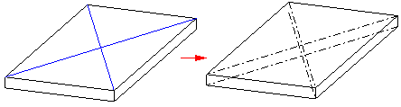

Cross Brake command
Creates a cross brake feature from a sketch coincident with a part face.

Note:
The command is only available if the part contains a design model and sketch.
The cross brake command is available when working on a 3D model, but not available when simplifying or flattening a model. The feature is displayed in the 3D model and can be located with the Select Tool.
Note:
The data displayed for the cross brake is vector stored as an attribute on the sheet metal body. The cross brake geometry is for display purposes only. Since there is no geometry to translate, the cross brake feature is not supported by 3D translators.